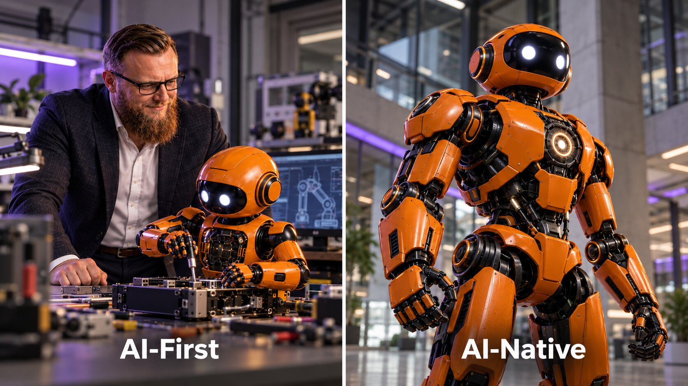
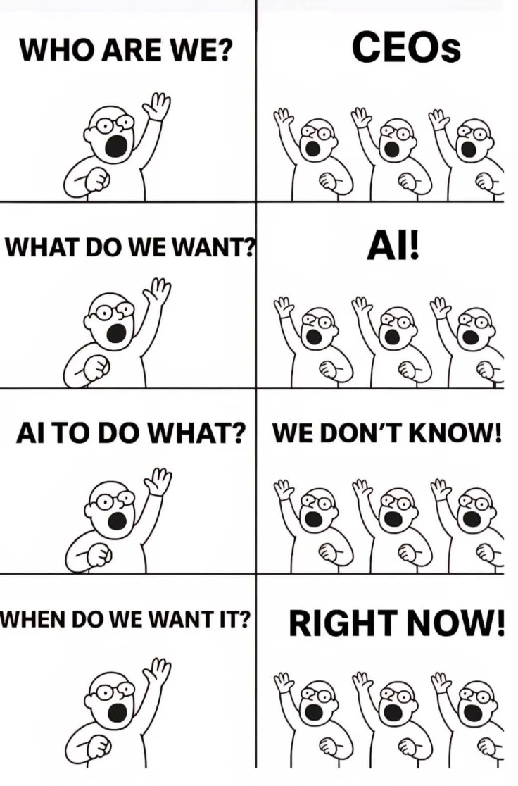
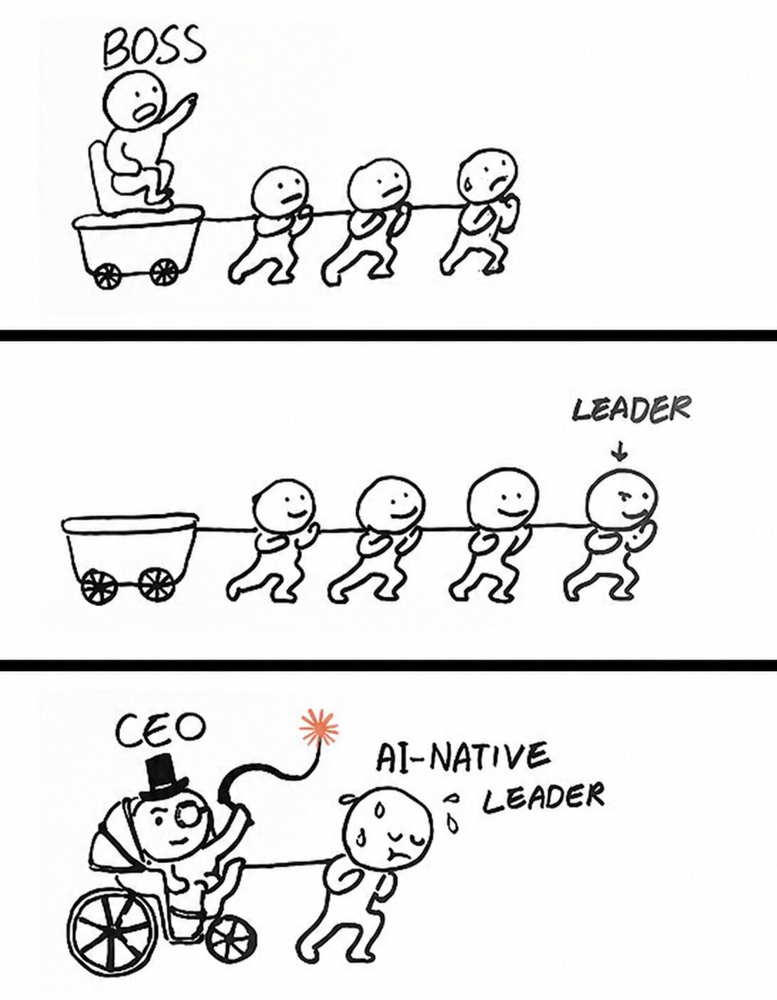

AI-FirstиAI-Native— да что это такое на самом деле?
Четыре уровня ИИ-компаний, глубина и ширина интеграции, автономность процессов и новая экономика бизнеса.

Можно внедрить сто ИИ-агентов, ускорить каждого сотрудника и при этом не сделать компанию быстрее. Потому что компания — не сумма индивидуальных задач, а цепочка процессов, решений и ответственности.
Я много лет занимаюсь внедрением ИИ в бизнес и регулярно сталкиваюсь с одной проблемой. Компании покупают новые инструменты, запускают пробные внедрения, обучают сотрудников, но продолжают работать по старым правилам. Меняются технологии, а не организация работы.
В одном из проектов я занимался ИИ-трансформацией разработки международной финансово-технологической компании, где работали около 500 инженеров. Устаревшие системы, миграция банковского ядра, сложные интеграции, регуляторные требования и огромное количество зависимостей между командами. Просто раздать разработчикам ИИ-помощника для написания кода или доступ к языковым моделям означало бы ускорить написание кода, но оставить нетронутыми проблемы с требованиями, тестированием, согласованиями и выпусками.
Поэтому предлагаю смотреть на ИИ не через количество внедрённых инструментов, а через четыре уровня: AI-Enabled, AI-Driven, AI-First и AI-Native. Они помогают понять, кто выполняет работу, насколько самостоятельна система и где именно создаётся ценность.
От помощника до основы бизнеса
Возьмём один пример — маркетинговое агентство. Клиент хочет исследовать рынок, разработать стратегию, запустить рекламу и привлечь покупателей. Посмотрим, что меняется на каждом уровне.
AI-Enabled: человек работает с ИИ
Маркетолог использует ChatGPT, дизайнер — генератор изображений, аналитик — ИИ для работы с таблицами. Каждый делает свою работу быстрее. Но контекст собирается вручную, а результаты по-прежнему передаются между сотрудниками. Если исследование готово за десять минут, а дизайнер приступит к работе завтра, общий процесс почти не ускорится.
AI-Enabled — ИИ помогает выполнять отдельные задачи, не меняя саму организацию бизнеса.
AI-Driven: ИИ анализирует и рекомендует
Агентство подключает модели к системе учёта клиентов, рекламным кабинетам и аналитике. Система прогнозирует конверсии, рекомендует бюджеты, выявляет неэффективные кампании и автоматизирует отдельные действия. ИИ становится частью процессов, но человек по-прежнему координирует основные решения и исполнение.
AI-Driven — ИИ помогает компании принимать решения и частично автоматизировать процессы.
AI-First: ИИ выполняет работу по умолчанию
Теперь агенты получают запрос клиента, собирают данные, изучают конкурентов, разрабатывают кампании, готовят материалы и выполняют разрешённые действия через интеграции. Люди устанавливают цели, ограничения, управляют качеством и подключаются к сложным ситуациям.
Это уже не ускорение отдельных сотрудников, а перестройка операционной модели. AI-First — компания, где ИИ становится основным исполнителем стандартной операционной работы, а человек управляет интеллектуальной системой.
AI-Native: ИИ — основа самой ценности
Следующий шаг: агентство превращает свою экспертизу в платформу. Клиент самостоятельно подключает данные, задаёт цели и получает результат через интеллектуальную систему. ИИ не просто помогает специалистам агентства: именно его способности определяют, что компания предлагает рынку.
AI-Native — бизнес, у которого ИИ составляет фундамент ценностного предложения. Без него основная функция продукта или услуги становится невозможной либо принципиально другой.
Один бизнес — четыре способа работы
СХЕМА 01 / ЧЕТЫРЕ УРОВНЯ👆 Нажмите на уровень — увидите, кто выполняет работу и что меняется для клиента.
Агенты становятся исполнителями
ИИ получает контекст из рабочих систем, выполняет цепочки действий, а человек управляет качеством, полномочиями и исключениями.
Активный уровень выделен цветом. Выберите другой для сравнения.
Сравнение четырёх типов ИИ-компаний
ТАБЛИЦА / ОСНОВНЫЕ РАЗЛИЧИЯ| Уровень | Кто делает работу | Роль человека | Что меняется |
|---|---|---|---|
| AI-Enabled | Сотрудники с ИИ-инструментами | Непосредственный исполнитель | Скорость отдельных задач |
| AI-Driven | Сотрудники + модели в процессах | Принимает ключевые решения | Качество анализа и решений |
| AI-First | Агенты выполняют стандартные операции | Оператор, архитектор, контролёр | Операционная модель компании |
| AI-Native | ИИ определяет ключевую клиентскую функцию | Создатель системы и ответственный за результат | Само ценностное предложение |
Кто выполняет работуРаботу выполняет сотрудник
Что меняетсяУскоряются отдельные задачи
Кто выполняет работуРешениями управляет человек
Что меняетсяМодели встроены в процессы
Кто выполняет работуЧеловек управляет агентами
Что меняетсяМеняется операционная модель
Кто выполняет работуИИ является ядром предложения
Что меняетсяМеняется бизнес-модель
AI-Native может одновременно быть AI-First по внутренней организации. Это авторская классификация, а не единый отраслевой стандарт.
Главное различие: работа компании или ценность для клиента?
СХЕМА 03 / СРАВНЕНИЕКто выполняет работу?
ИИ становится основным исполнителем стандартных процессов, человек задаёт цели, ограничения и контроль.
Без чего ценность невозможна?
Возможности ИИ составляют саму основу предложения: продукт или услуга принципиально зависят от интеллекта.
Компания может одновременно быть AI-Native по продукту и AI-First по внутренним операциям.

Услуга или продукт? Вопрос не в наличии человека
В примере агентства AI-First выглядит как автоматизированная услуга, а AI-Native — как самостоятельный продукт. Но это не универсальное правило.
Согласно теории задач клиента, люди покупают продукты и заказывают услуги, чтобы решить конкретную задачу. Бизнес-стратегию можно получить у консультанта или через интеллектуальную систему. В обоих случаях клиенту нужен результат, хотя способ выполнения работы различается.
Услуга может предоставляться автоматически, а программный продукт — требовать участия человека. Программы также можно продавать по подписке. Поэтому правило «услуга — это человек, продукт — это автономность» не подходит для определения уровня ИИ-зрелости.
Появляется и модель «услуга как программная система», которую описывает Гартнер: компания коммерциализирует выполнение бизнес-задачи ИИ-системой, продавая результат, а не только лицензию на инструмент.
AI-Native не означает компанию без людей. ИИ может быть фундаментом медицинского продукта, но врач сохраняет ответственность за решение. Главное — что ценность такого продукта принципиально опирается на возможности ИИ.

Одинаковые инструменты. Разный результат.
В марте 2026 года исследователи представили работу «Как встроить ИИ в работу компаний: полевой эксперимент».
В эксперименте участвовали 515 молодых компаний. Все получали техническое обучение, доступ к моделям и оплаченным средствам для их использования. Но одной группе дополнительно показывали реальные примеры того, как компании перестраивают продукты и процессы вокруг ИИ.
Эта группа находила больше вариантов применения ИИ, выполняла больше задач и чаще приобретала платящих клиентов. При этом потребность во внешнем капитале снижалась, а заявленный спрос на сотрудников существенно не менялся.
«Как встроить ИИ в работу компаний» · 515 молодых компаний
СХЕМА 04 / ИССЛЕДОВАНИЕприменений ИИ
задач
платящих клиентов
в эксперименте
Результаты рандомизированного краткосрочного эксперимента в молодых компаниях. Оценка эффекта для выручки имеет более слабую статистическую значимость. Открыть исследование ↗
Авторы назвали ключевое ограничение проблемой поиска применений ИИ: компаниям трудно обнаружить, где именно ИИ создаёт ценность и как перестроить под него взаимосвязанные процессы. Доступ к моделям ещё не означает умения использовать их в нужном месте.
Например, разработчик стал писать код вдвое быстрее. Но требования согласуются неделями, тестирование выполняется вручную, а выпуск зависит от нескольких команд. Ускорился один этап, но ограничение просто переместилось в другое место.
От автоматизации задачи к сквозному процессу
СХЕМА 05 / ПРОЦЕССЫВерхняя цепочка ускоряет только одну операцию. Нижняя меняет архитектуру всей работы.
Главное — не больше агентов, а другая работа
В июне 2026 года BCG опубликовала материал «Как перестроить операционную систему работы вокруг ИИ». Основной вывод: компании получают наибольший эффект, когда перестраивают сквозные процессы, а не просто добавляют ИИ поверх прежней организации.
BCG приводит пример европейского банка, который внедрил OpsAI Agent в розничное кредитование. Система распознаёт документы, извлекает и сверяет данные, проводит проверки и проверяет договоры. Изменился не отдельный инструмент специалиста, а способ прохождения заявки через всю операционную цепочку.
Пример BCG · розничное кредитование
СХЕМА 06 / ПРИМЕРпотребительских кредитов
ипотечных заявок
процессов кредитования
не только отдельных задач
Данные о конкретном внедрении, приведённые BCG; не универсальный прогноз эффекта. Первоисточник ↗
Банк продолжает предоставлять традиционные финансовые услуги. Он не обязан становиться AI-Native, чтобы радикально изменить исполнение. Это хороший пример AI-First трансформации.
Человек здесь не исчезает. Он определяет цели, ограничения, контролирует качество и принимает критические решения. Но ему больше не нужно вручную соединять все этапы процесса.
Почему AI-Native — не просто следующий процент автоматизации
В исследовании «Компании, построенные вокруг ИИ» Хёнджин Ким и Рембранд Конинг описывают два канала влияния ИИ на компанию.
Изменение внутренних процессов — ИИ меняет внутреннюю работу сотрудников: анализ, разработку, продажи, поддержку, управление.
Изменение клиентского предложения — ИИ встраивается в то, что компания продаёт клиенту. Например, Gamma позволяет создавать презентации непосредственно через интеллектуальную систему, а не заказывать каждую презентацию у команды специалистов.
Два способа создавать ценность с ИИ
СХЕМА 07 / ИССЛЕДОВАНИЕИзменение внутренних процессов
ИИ ускоряет и перестраивает работу внутри компании. Компания иначе производит результат.
Изменение клиентского предложения
ИИ становится частью клиентского предложения. Клиент получает саму интеллектуальную возможность.
Иллюстрация двух исследовательских механизмов. Они могут сочетаться в одной компании. Исследование ↗
В выборке исследователей AI-native молодые компании Y Combinator имели примерно на 25% меньше сотрудников, чем сопоставимые молодые компании, при сопоставимых оценках стоимости бизнеса. Это статистическая связь, а не обещание, что внедрение ИИ сократит штат на четверть.
Но главное наблюдение сильнее цифр: организационные различия объясняются не только применением ИИ-инструментов сотрудниками, но и тем, что интеллектуальная работа переносится в сам продукт.
В том же исследовании также разбирается FazeShift — автоматизация работы с дебиторской задолженностью. Прежде последовательность из восьми этапов требовала ручных переходов между людьми и программами. Система связывает эти операции в автоматизированную цепочку. Повторяемая интеллектуальная услуга становится программной функцией.
Но AI-Native не обязан устранять человека из каждого решения. Важнее то, что в определении Гарвардской школы бизнеса сам бизнес и его ценностное предложение проектируются вокруг ИИ. Поэтому AI-Native компания может одновременно быть AI-First по своей внутренней организации.
Два измерения: глубина и ширина
Чтобы не спорить бесконечно о названиях, я предлагаю смотреть на два измерения интеграции ИИ в бизнес.
Глубина интеграции
Глубина показывает, какую роль ИИ играет в работе: помогает человеку, анализирует и рекомендует, самостоятельно выполняет задачи, управляет сквозными процессами или становится фундаментом самого ценностного предложения. Автономность входит в глубину, а не образует третью независимую ось.
При этом автоматизация и автономность не равны. Программа может автоматически отправить тысячу писем и не принимать никаких самостоятельных решений. Агент способен исследовать ситуацию, выбрать инструмент, скорректировать план и завершить задачу.
Ширина интеграции
Ширина показывает, какую долю значимых процессов охватывает ИИ: отдельные задачи, бизнес-функции или всю клиентскую цепочку. При этом автоматизация бухгалтерии не должна иметь тот же вес, что автоматизация функции, ради которой клиент покупает продукт.
Поэтому для AI-Native особенно важен охват основной задачи клиента. Молодая компания может решить одну ключевую задачу клиента с помощью ИИ и быть AI-Native, даже если его кадровый учёт остаётся ручным.
Глубина × Ширина: глубина и ширина интеграции
СХЕМА 08 / ДВА ИЗМЕРЕНИЯЧто ИИ делает и насколько самостоятельно?
Автономность входит в глубину. На уровне 5 важно не просто исполнение, но и фундаментальная роль ИИ в продукте или услуге.
Какую часть значимой работы охватывает ИИ?
Ширину считаем с учётом значимости процессов для клиента, а не числа автоматизированных отделов.
👆 Нажмите на точку или название уровня — справа появится объяснение.👆 Выберите уровень — ниже появится объяснение.
ИИ выполняет значительную часть ключевой операционной работы. Важно качество сквозного исполнения, а не просто число агентов.
Показана условная траектория роста глубины и ширины интеграции, а не обязательные этапы развития любой компании. AI-Native отличается фундаментальной ролью ИИ в клиентской ценности.
Как считать: сначала разбейте основную задачу клиента на этапы и задайте каждому вес по его вкладу в конечный результат. Глубина — взвешенная оценка роли и автономности ИИ на этапах по шкале 1–5. Ширина — доля значимой цепочки, на которой ИИ реально задействован. Дополнительно проверьте, является ли ИИ необходимой основой предложения для клиента. Это практическая операционализация, а не международный стандарт.
Эти два измерения описывают фактическую интеграцию. Но важно не выдавать их за обязательную историю развития каждого бизнеса. Компания AI-Native может возникнуть сразу. А крупная AI-First компания может быть операционно зрелее молодой компании, хотя её продукт не основан на ИИ.
Когда я использую термин «AI-Native разработка» для организации инженерных процессов, речь идёт об архитектуре производства продукта. А «AI-Native компания» — это характеристика бизнес-модели и клиентского предложения. Эти понятия могут пересекаться, но не совпадают.
Как понять, насколько автономен бизнес
Представим, что система автоматически обработала девяносто клиентских запросов из ста. Но двадцать результатов оказались ошибочными и потребовали переделки. Можно ли заявить о 90% автономности? Только если считать попытки, а не успешное завершение работы.
Поэтому я предлагаю измерять не количество автоматических действий, а результат всей цепочки.
Пять показателей реальной автономности
СХЕМА 09 / ПОКАЗАТЕЛИЗрелость нельзя оценивать одним показателем автономности: нужны качество, стоимость и границы ответственности.
Для финансовых, медицинских и других высокорисковых решений участие человека может быть обязательным. Это не признак слабого ИИ, а элемент правильно построенного управления рисками.
Как перейти к AI-First на практике
В моей методологии трансформация начинается с диагностики. Нельзя просто купить агентную платформу и ожидать, что она исправит разрозненные данные, неправильные роли и непрозрачные процессы.
Первый шаг — Индекс ИИ-зрелости. Я оцениваю семь направлений организации по пяти критериям каждое — всего 35 критериев: стратегия и управление, люди и культура, инфраструктура, данные, модели, внедрение ИИ, исследования и разработки.
Это показывает, где находится ограничение. Иногда компания имеет отличные модели, но не может предоставить агентам нужный контекст. Иногда технически всё работает, но руководство не определило, кто отвечает за решения и риски.

Семь направлений индекса ИИ-зрелости
СХЕМА 10 / 7 × 535 критериев оценивают готовность и зрелость компании. Глубина × Ширина отдельно отражают фактическую роль и охват ИИ в работе.
Второй шаг — аудит процессов. Сотрудники рассказывают, как выполняют работу, а анализ журналов событий показывает, как задачи действительно движутся между системами. Мы собираем текущую схему работы, находим задержки, повторения, ручные переходы и исключения.
Третий шаг — проектирование целевой схемы работы. Не переносим старый процесс в ИИ один к одному, а задаёмся вопросом, как должна выглядеть вся цепочка, если часть работы выполняется агентами. Убираем лишние согласования, связываем данные, определяем правила исполнения.
Четвёртый шаг — пробные внедрения и проверка эффекта. Выбираем один-два значимых процесса, измеряем скорость, стоимость и качество, а затем масштабируем удачные решения.
Пятый шаг — обучение людей. инженер по автоматизации с ИИ проектирует и автоматизирует процессы, оператор ИИ-агентов управляет агентами, архитектор ИИ-системы отвечает за архитектуру системы. Руководители учатся контролировать не только людей, но и интеллектуальных исполнителей.
Когда агенты становятся единой системой
Один агент работает с почтой, другой — с системой учёта клиентов, третий — с документами, четвёртый — с аналитикой. Если у каждого своя память и отдельные процессы, сотрудник снова вынужден связывать их вручную.
Поэтому я рассматриваю AI-First компанию как единую операционную ИИ-систему. Она соединяет знания компании, данные, задачи, агентов, инструменты и показатели в замкнутый цикл.
Операционный контур AI-First компании
СХЕМА 11 / ОПЕРАЦИОННАЯ СИСТЕМАСИСТЕМА
Данные → контекст → решение → действие → результат → обновление знаний. Человек управляет целями, полномочиями и качеством.
Новый клиент оставляет запрос. Система находит его историю, анализирует условия, выбирает действия и выполняет их в установленных пределах. Если возникает нестандартная ситуация, человек получает задачу вместе с контекстом и вариантами решения. Результат сохраняется в общей памяти.
Так сотрудники перестают вручную перемещать информацию между десятками инструментов. Их роль смещается к проектированию процессов, управлению агентами и ответственности за результат.

Меняется сама единица масштабирования бизнеса
В традиционном консалтинге увеличение числа клиентов обычно требует расширения команды. В AI-Enabled те же специалисты работают быстрее. В AI-Driven часть аналитики и решений выполняют модели. В AI-First агентам передаётся значительная часть стандартной работы.
А в AI-Native интеллектуальная функция может стать частью клиентского продукта. Дополнительный заказ не обязательно требует отдельного исполнителя — он потребляет вычисления, инфраструктуру и ресурсы поддержки системы.
Что масштабируется вместе с количеством клиентов
СХЕМА 12 / ЭКОНОМИКАТРАДИЦИОННАЯ МОДЕЛЬ
Больше заказов обычно означает больше человеческого времени и исполнителей.
AI-First
Люди управляют агентами, а система выполняет стандартную операционную работу.
AI-Native
Интеллектуальная способность встроена в клиентское предложение и тиражируется как система.
Концептуальное сравнение, не статистика численности штатов. Все три модели могут требовать разработчиков, поддержки, контроля, специалистов и руководителей.
Это не означает, что производство результата становится бесплатным. Остаются расходы на модели, вычисления, интеграции, безопасность, разработку и поддержку. ИИ не гарантирует прибыльность, если стоимость ошибок и контроля превышает экономию.
Но меняется зависимость между объёмом работы и количеством исполнителей. Именно это видно и в исследованиях молодых компаний, и в примерах перепроектирования сквозных процессов.
Отдельный путь хорошо иллюстрирует пример Ranger из полевого исследования. Предприниматель начал с продажи услуги, изучил повторяемые задачи клиентов и постепенно переносил их выполнение в ИИ-системы. Так оказание услуг может становиться основой программного продукта, а потребность в крупных инвестициях на старте — снижаться.
Но ИИ способен и быстрее привести к ошибке. Если молодая компания не понимает потребностей клиентов, её основатель может за неделю построить продукт, который раньше разрабатывал бы полгода, — и обнаружить, что этот продукт никому не нужен.
Пять вопросов к своей компании
Чтобы предварительно определить свой уровень, я бы начал с пяти вопросов. Они не заменяют полноценную диагностику, но помогают увидеть, что именно нужно измерять.
- Кто выполняет основную работу? Сотрудники с помощью инструментов, ИИ-модели через рекомендации или агенты как основные исполнители?
- Может ли система завершить процесс самостоятельно? От первого запроса до результата — с нужным качеством, а не только отдельные операции?
- Какую часть ключевой цепочки охватывает ИИ? Несколько вспомогательных задач или основную работу, за которую платит клиент?
- Что ограничивает масштабирование? Новый заказ требует нового специалиста или система способна обслуживать больше запросов преимущественно за счёт вычислений?
- Что произойдёт, если убрать ИИ? Бизнес продолжит предоставлять прежнюю ценность медленнее — или исчезнет сама основная возможность продукта?
Последний вопрос особенно полезен при разграничении AI-First и AI-Native. Но реальную зрелость определяют данные о процессах, качестве и экономике, а не только самооценка руководителя.
Не больше инструментов. Другая архитектура бизнеса.
Полевое исследование молодых компаний показывает проблему поиска эффективных применений ИИ. BCG — ценность сквозной перестройки процессов. Гарвардская школа бизнеса — переход от внутренних улучшений к продукту, в котором интеллектуальная работа становится частью предложения для клиента.
Отсюда четыре уровня: AI-Enabled помогает человеку; AI-Driven усиливает анализ и решения; AI-First перестраивает исполнение; AI-Native строит саму ценность вокруг возможностей ИИ.
Это не обязательная лестница. Компания AI-Native может возникнуть сразу. А действующая компания может стать AI-First, не изменив основной продукт. Глубина и ширина измеряют интеграцию, а роль ИИ в клиентской ценности позволяет отличить AI-Native.
В результате важны не число агентов и не количество сокращённых должностей, а завершённые задачи, качество, себестоимость и новая возможность масштабировать интеллектуальную работу.
Для меня смысл ИИ-трансформации — дать людям возможность создавать больше ценности, не превращая каждое увеличение масштаба в увеличение ручного труда.
Каков уровень вашей компании?
Проверьте ИИ-зрелость компании по семи направлениям, оцените сильные и слабые стороны и определите следующий шаг трансформации.
Пройти диагностику ИИ-зрелости